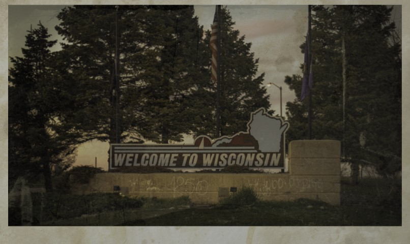

Two minutes till midnight in Wisconsin...
The chill of the evening clings to the air outside. You sit alone in your dorm room, staring at the clock radio resting atop your nightstand. The green digits on your wristwatch agree with the red digits on the clock; 11:58 PM – two minutes ‘til midnight. You pull your headphones off, set your Walkman on the desk, head over to your small bed and tune into the campus radio station on the cheap alarm clock. Light classical music can be heard fading out as the DJ talks about the next piece she's putting on the turntable.
11:59 PM
A minute later the radio crackles with static and an electrical buzz. Your small room is filled with an eerie hum that seems to vibrate through your very bones. You've heard rumors of this happening before – a mysterious pirate radio station taking over the campus airwaves at precisely midnight. You've tried to catch the show before but without success. Seems tonight you got lucky.
"Let there be METAL!"
The sound of distorted guitars can be heard through the static. A disturbed metal tune, with a happy beat, begins to play.
What have you found?
After a few minutes the song ends and the host returns.
"Dave Is Back Babies! ‘Metal at Midnight’ is live and we’ve got all the music and news you need to survive this messed up little town. And speaking of news, we’ve got some real juicy nuggets for all you little pink faced freshmen joining our church of METAL for the first time. And believe me, its news that THEY do NOT want you to know."
He pauses only a moment to catch his breath.
"We’re going live tonight because I know some of you little metal headed sideshow freaks have got class in that torture chamber known as Sister Sarah’s. And believe me, they are trying super hard to keep this quiet. So Dave’s going all School House Rock tonight. Knowledge is power! And power is what they don’t want you to have."
The static hangs in the air as Dave goes quiet. Is that ... screams in the static? You lean in closer, your heart pounding in your chest as the static is broken by Dave's whispered voice.
"Yeah, that hospital’s all clean and bleachy fresh outside but in the back rooms … Oh brother, it’s Mike Myers meets that freaky little alien chest baby. Us vets know it. We've heard the screams. We've seen shadows moving all weird. We've seen dumpsters getting collected late at night. Ain't no trashman working after midnight! Yeah, Sarah’s stinks alright so watch your back there. "
You glance out your window, out across the campus, towards the hospital – or rather, what you can see of it through the dense trees. The lights seem too bright tonight, casting long, dancing shadows that seem to twist and writhe unnaturally. You swear you can hear the sound of a large truck operating.
"Worst yet, THEY know it’s there! And Dave’s got the cancelled checks to prove it; right where you’d expect. In that nasty, creepy museum all the norms pass every day on their way to class. Prairie Hall is just a 24/7, 365, all you can eat charnel house with a receptionist. But they do keep records there…."
"Call Mr. King, I've got a pitch for his next book!"
The radio crackles again, and you swear you hear something else – a whispering beneath Dave's words, a dark alien presence pushing through the static. Music breaks through the small speaker again. For the next several hours metal music flows from the pirate station. Just before dawn the music stops and Dave cuts in again. You were dozing but the odd interference and the mad host's words stir you awake.
"Damn, they found me so it’s time to wrap. But before I bounce remember…"
"We’ll fight on the land," "We’ll fight in the fields and in the streets," "We’ll fight in the hills," "We’ll never surrender." "Man, someone call in the metal MILITIA!"
The radio begins blaring the last song of the show. The pirate station has cranked up the volume to an almost unbearable level as heavy power chords and frantic riffs cut through the airwaves. You jump back, heart racing. As the song plays you can hear the sound of equipment being thrown into boxes. Over the din, you think you can hear Dave singing along. After a few moments, the radio station fades back into quiet static, leaving you alone with your thoughts – and the chilling echoes of Dave's words. You barely notice when the campus radio comes back on the air. Looking back out the window you can see the start of the morning's false dawn.
The night DJ has been replaced by the morning show. Soft Americana music soothes the ringing in your ears as you listen to a sorrowful woman sing over an old guitar.
In shadows deep where whispers stir A pact is forged silence unheard My heart I give to the darkened sky To save the fields to let hope fly Oh hear my call oh ancient dread
Welcome to Wisconsin.
Welcome to a world where truth hides behind conspiracy theories and history. A world where darkness lurks in the unlikeliest of places. A world where friend and foe are difficult to distinguish from one another.
Class is in session and a new semester begins tonight. Are you ready to confront the truths hidden within the hallowed halls of Caroline College?
Disclaimers:
- This game makes creative use of organizations that exist in real life. This game is set in an alternate history and the inclusion of these peoples, the Ho-Chunk, the Amish and the Lutherans, are here for verisimilitude. I have learned much about these peoples during the creation of this setting and have nothing but respect for their culture. I have taken efforts to avoid working in their unique mythologies into this game. I am not versed enough in these histories to do justice to such an endeavor. Any facsimile to real people, real events or histories is purely coincide.
- This document makes use of large language models to accomplish initial drafts or art that I am not qualified, or able, to produce. Everything goes through a human multiple times but if this is a topic that you have strong opinions on, please consider avoiding this work.